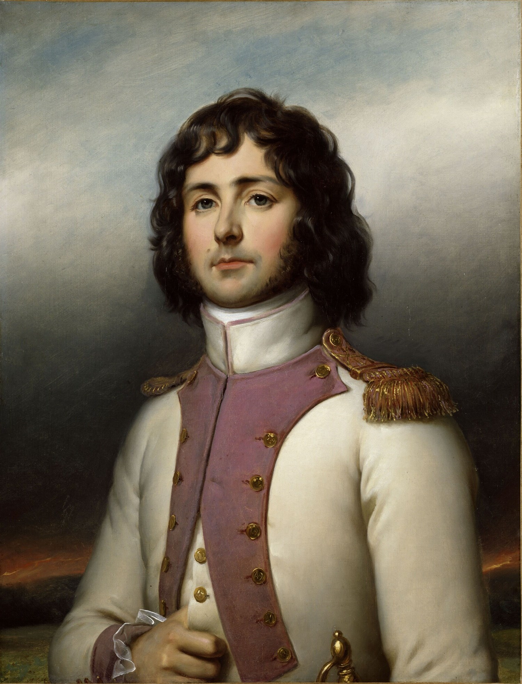
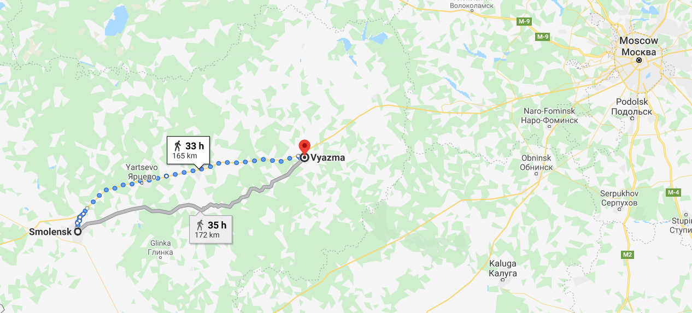

스몰렌스크에서 모스크바로 - 러시아 측의 사정
게시: 2020-05-18T06:30:29+09:00
러시아군의 상황도 당연히 좋지는 못했습니다. 물리적으로도 러시아군은 정말 걸음아 날살려라 도망치고 있는 형국이었습니다. 전쟁 초기, 병사들의 노숙에 대해 항상 시적으로 기술하던 젊은 독일계 에스토니아 귀족 출신의 러시아 기마근위대 장교 욱스퀄(Boris von Uxkull)도 8월 21일 철수에 대해서는 '우리 모두 겁먹은 토끼처럼 달아나야 했다' 라고 기록했습니다. 이렇게 죽어라 도망치는 처지이다보니 보급도 프랑스군에 비해 별로 나을 것이 없었습니다. 먹을 것도 부족했지만 먹을 것이 있다고 해도 그걸 조리해 먹을 시간이 없었습니다. 후위부대는 코노브니친(Petr Petrovich Konovnitsin) 장군이 이끌고 있었는데, 이들은 스몰렌스크에서 출발한 이후 2일 동안 아무 것도 먹지 못하고 냅다 뛰어야 했습니다. 이들은 매일 같이 끈질기게 따라 붙는 프랑스군 선봉대와 소규모 전투를 벌이며 병력을 잃어야 했는데, 그러면서도 하루에 무려 65km를 돌파했습니다. 이렇게 강행군을 하다보니 특히 말들의 피해가 컸다는 점은 프랑스군과 똑같았습니다. 당시 종군하고 있던 바실치코프(Vassilchikov) 대공은 이런 식으로 가다간 2주 안에 러시아군에 말이 한마리도 남지 않을 거라고 걱정했습니다.

(코노브니친 장군입니다. 그는 당시 48세의 젊은 장군으로서, 그 전에는 스웨덴과의 전쟁에서 활약했습니다. 그는 스몰렌스크로부터 후퇴할 때 완벽한 후위 부대 작전을 지휘했고, 보로디노 전투에서 바그라티온이 전사한 뒤에는 그의 자리를 맡아 러시아군 전체의 좌익을 지휘하기도 했습니다. 그의 말년은 자식들 때문에 그다지 행복하지는 않았습니다. 그의 아들과 딸은 모두 데캄브리스트(Decembrist)의 난에 연루되어, 아들은 졸병으로 강등되어 카프카스 지방으로 배치되었고, 딸은 자진해서 역시 데캄브리스트였던 남편을 따라 시베리아 유배지로 가버렸습니다.) 당연히 사기도 나빴습니다. 전투에서 이기고 전진하는 프랑스군의 사기가 그리 좋지 못했는데, 하물며 패하고 도망치는 군대의 사기는 더욱 안 좋았겠지요. 당시 바클레이 밑에 있었던 젊은 클라우제비츠는 스몰렌스크 전투가 전략적 승리라고 평가하고 있었습니다. 러시아군도 피해가 컸지만 프랑스군도 만만치 않은 피해를 입은 상태였고, 여기서 후퇴할 수록 러시아군에게는 지속적으로 병력과 무기, 식량이 보충될 수 있었지만 프랑스군은 지속적으로 약화되기 때문이었습니다. 그러나 클라우제비츠와는 달리 자기 나라 영토가 유린되고 있던 러시아인들의 생각은 달랐습니다. 이들의 사기가 나쁜 것은 단지 싸움에서 졌기 때문만은 아니었습니다. 러시아군은 장교들이나 병사들이나 자신들이 패배한 것이 아니라 배신당했다고 생각했습니다. 물론 독일인 지휘관 바클레이를 지목한 것이었습니다. 바클레이가 결정적인 순간에 후퇴를 강요하지 않았다면 스몰렌스크도 지킬 수 있었고 승리는 러시아군의 차지가 되었을 거라고 다들 불만이 대단했습니다. 바클레이에 대한 악감정은 최고위층인 바그라티온부터 맨밑바닥 졸병까지 일치된 감정이었습니다. 루드니아(Rudnia) 반격에서 바클레이에게 항명했다가 스몰렌스크 전투에서 제외되었던 바그라티온은 특히 불만이 많았습니다. 그는 짜르의 측근이자 모스크바 시장인 로스톱친(Rostopchin)에게 편지를 써서 자신이 루드니아에서 항명해야 했던 이유를 설명하며 '프랑스군이 나보다 러시아군의 작전에 대해 더 잘 알고 있더라'라며 바클레이에 대해 험담을 했는데, 공교롭게도 자신의 항명을 변명하느라 이렇게 아무말 대잔치를 늘어놓았던 것이 사실로 드러나 버렸습니다. 스몰렌스크 전투 직전인 8월 8일, 비텝스크를 향해 반격을 시도한 바클레이의 작전에 따라 플라토프(Platov) 장군의 기병대가 루드니아에서 프랑스군 세바스티아니(Sebastiani) 장군의 진영을 급습했었지요. 이때 세바스티아니의 기밀 문서들 일부가 러시아군 손에 들어갔는데, 나중에 보니 그 중에는 뮈라가 세바스티아니에게 보낸 편지가 있었고, 거기서 뮈라는 '곧 러시아군이 그쪽으로 공격해올 거라는 소식이 있으니 조심하라'고 세바스티아니에게 경고를 주었던 것입니다. 러시아군은 이것이 러시아군 고위층 내의 누군가가 프랑스군과 내통하고 있다는 확실한 증거라고 보았습니다.

(세바스티아니 장군입니다. 그는 원래 군인인기는 했습니다만 야전군 사령관보다는 오스만 투르크에 외교관으로 파견되어 꽤 큰 역할을 했던 사람이었습니다. 그는 세계 문화 유산인 스페인 알함브라 궁전을 점령한 뒤, 당시 폐허로 버려졌던 그 건물의 진가를 알아보고 거기를 프랑스군 사령부로 삼고 궁전과 요새를 보수했습니다. 그래서 19세기에 알함브라를 여행하며 그 존재와 아름다움을 세계에 알렸던 미국 작가 워싱턴 어빙(Washington Irving)은 프랑스군 덕분에 알함브라가 세상에 알려졌다고 칭송하기도 했습니다.) 물론 이건 사실이 아니었습니다. 나중에야 드러난 사실이었지만, 뮈라가 그런 정보를 미리 알고 있었던 것은 순수한 우연에 불과했습니다. 러시아군에서 복무 중이던 어떤 폴란드인 장교가 루드니아 인근에 살고 있던 자기 어머니에게 '그쪽에서 전투가 벌어질 것 같으니 피하라'고 알리는 편지를 보냈는데, 그게 프랑스군 순찰대의 손에 들어갔던 것 뿐이었지요. 그러나 러시아군은 모두 그렇쟎아도 눈엣가시 같았던 바클레이와 그의 독일계 참모진들이 프랑스와 내통하고 있다는 확실한 증거로 보았습니다. 감히 총사령관인 바클레이를 지목해서 배신자라고 떠들지는 못했지만, 특히 그 참모들 중 독일계 에스토니아인이었던 로벤스테른(Vladimir Ivanovich Lowenstern) 소령과 퓰의 친구이자 부하였던 볼초겐(Ludwig von Wolzogen) 대령이 가장 그럴싸한 프랑스 내통자로 지목되었습니다. 이들은 평소 바클레이와 독일어로만 떠들었기 때문에 러시아 장교들이 무척 싫어했고, 또 이 둘 모두 프랑스에서 살았던 기간이 꽤 되었기 때문이었습니다. 결국 로벤스테른은 감시 하에 모스크바로 전출되는 수모를 당해야 했습니다. 로벤스테른이 떠난 다음에도 러시아군의 바클레이에 대한 증오심은 여전했습니다. 처음에는 바클레이가 전투를 회피하려 한다며 욕을 했으나, 결국 알고 보면 바클레이가 독일인이기 때문에 미워하는 것이었습니다. 가령 바클레이는 스몰렌스크에서 동쪽으로 약 90km 떨어진 도로고부즈(Dorogobuzh) 일대에서 나폴레옹과 일대 회전을 벌이려 했는데, 이번에는 바그라티온이 그 일대 지형에 대해 이런저런 트집을 잡으며 퇴짜를 놓았습니다. 바클레이는 수모를 참고 약간 더 동쪽 지역을 다른 결전장으로 제시했는데, 바그라티온은 여전히 트집을 잡으며 바클레이와 논쟁만 벌였습니다. 결국 바그라티온이 원하는 것은 나폴레옹과의 전투보다는 바클레이를 쫓아내는 것임이 분명해보였습니다. 바그라티온이 이렇게 상급자인 바클레이에게 불손하게 굴었던 것은 믿는 바가 있기 때문이었습니다. 바로 전체 러시아군이 모두 바클레이를 미워한다는 것이었습니다. 장군들은 바클레이가 결단력이 없다고 싫어했고, 장교들은 그가 겁장이기 때문에 경멸했으며, 사병들은 그가 러시아 정교 미사에도 참석하지 않는 이교도 독일인이기 때문에 증오했습니다. 심지어 바클레이가 말을 타고 지나가는데 사병들이 '저기 프랑스에 조국을 팔아먹는 배신자가 지나간다' 라며 꽤 큰 소리로 떠들어댈 지경이었습니다. 바클레이는 애써 이런 웅성거림을 못들은 척 해야했습니다.

(비아즈마의 위치입니다. 스몰렌스크와 모스크바 중간에 채 미치지 못하는 위치입니다.) 바클레이가 이런 모욕을 참았던 것은 다 뜻하는 바가 있기 때문이었습니다. 그는 결국 말이 아닌 전과로 자신의 전략이 맞다는 것을 입증해보이려 했습니다. 마침내 그는 8월 26일, 스몰렌스크와 모스크바 중간 즈음에 있는 비아즈마(Vyazma) 인근에서 나폴레옹과 한판 승부를 벌이기에 딱 좋은 지형을 찾았고, 바그라티온조차도 거기에 동의했습니다. 그는 병사들에게 참호를 파고 포대를 쌓도록 지시함과 동시에 짜르에게 편지를 써서 '이제 비로소 진격의 발판을 마련할 수 있게 되었습니다'라고 알렸습니다. 그러나 진지 구축에는 적어도 2일이 필요했는데, 프랑스군이 너무 바싹 뒤쫓고 있어서 코노브니친 장군의 후위대는 도저히 그 2일간의 시간을 벌 수가 없었습니다. 어쩔 수 없이 바클레이는 결국 삽질을 하던 러시아군에게 다시 후퇴할 것을 명령해야 했습니다. 바그라티온은 오히려 신이 나서 여기저기에 편지를 써서 '이런 식이면 곧 모스크바에 닿겠다'라며 바클레이의 험담을 늘어놓았습니다. 바그라티온은 자신이 바클레이 대신 전체 야전군 총사령관을 맡기를 원했습니다. 하지만 저 멀리 모스크바와 상트 페체르부르그에서는 이미 다른 움직임이 시작된 다음이었습니다.
Source : 1812 Napoleon's Fatal March on Moscow by Adam Zamoyski http://napoleon-series.com/research/russians/c_lowenstern1.html http://rusgenerals.oooprog.ru/index.php?id=konovnitsin https://en.wikipedia.org/wiki/Horace_Fran%C3%A7ois_Bastien_S%C3%A9bastiani_de_La_Porta